Understand
Figure out the real problem, the users, and the constraints before writing a line.
University of Toronto · Statistics + Computer Science + IMI · Class of '27
I build mobile apps and backends that actually ship, from hackathon-winning AI pipelines to a rental marketplace launching on the App Store.
/ Hello
I'm a stats student who can't stop building. I care about clean systems, fast feedback loops, and products people actually open twice.
/ How I work
Figure out the real problem, the users, and the constraints before writing a line.
Type-safe, tested, and structured so the next feature is easier than the last.
Get it in front of people, measure, fix what breaks, and keep going.
/ Selected work
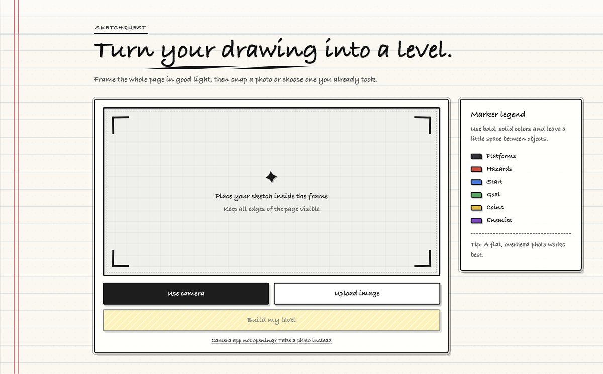
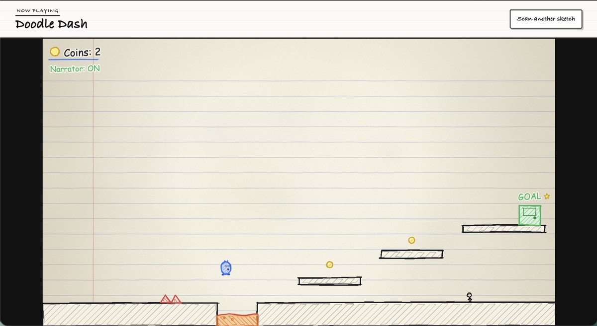
Draw a platformer level on paper, snap a photo, and play it seconds later. I led a team of three to build it, and it took 1st place at EmberHacks 2026 out of 84 participants.
Under the hood it's a React + TypeScript (Vite) frontend running Phaser 3, with a Node/Express backend. Gemini Vision reads the photo into structured JSON level data, validated with Zod. A reachability check replays the game's own physics to catch unbeatable levels, and Gemini makes the smallest repair needed before the level loads. A resilience layer with response caching, fallback data and rate limiting keeps it working under API latency and quota limits.
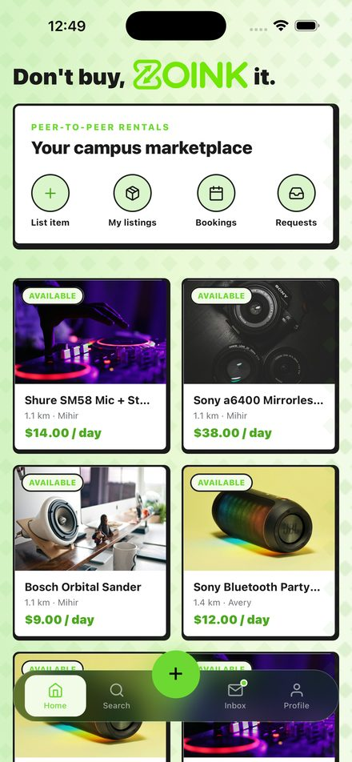
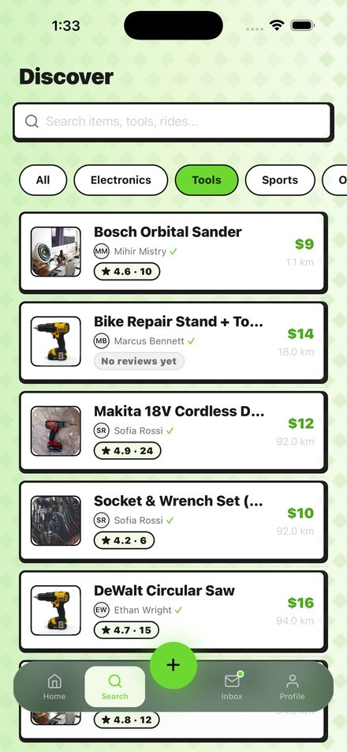
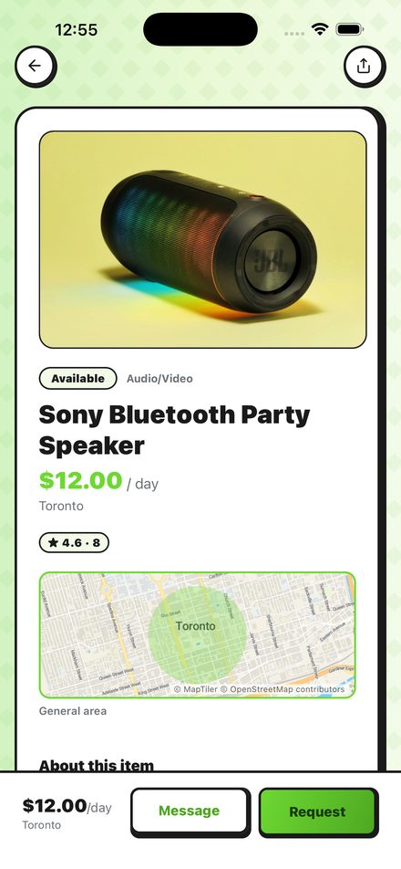
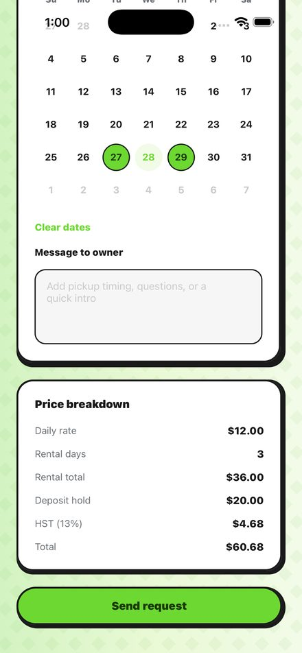
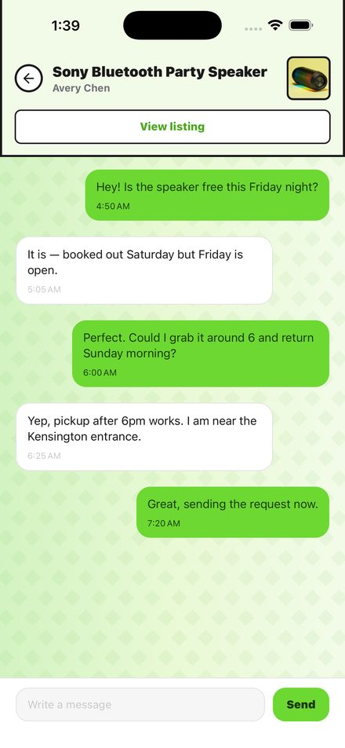
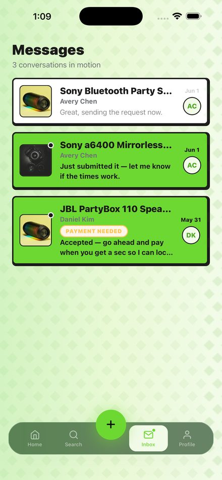
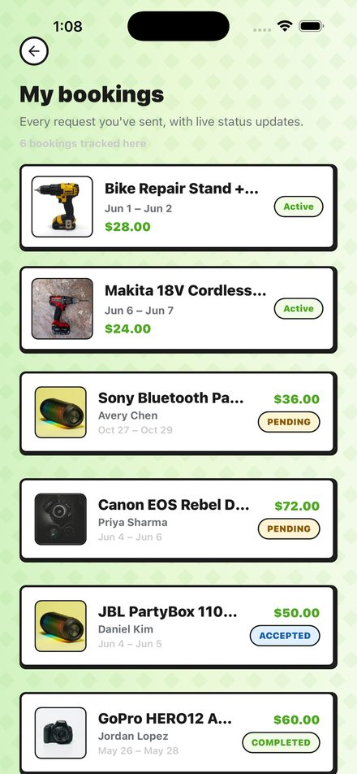
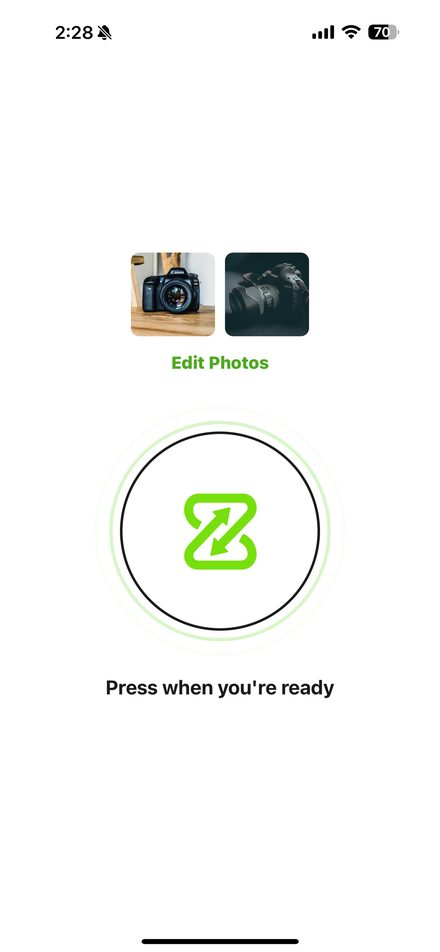
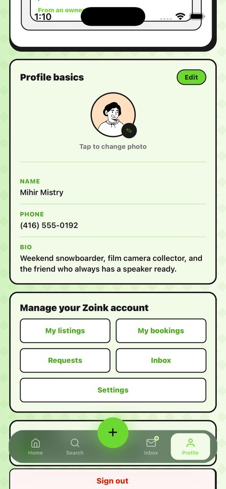
01 Home feed
A peer-to-peer rental marketplace for Ontario university students. Instead of buying a camera, speaker or drill you'll use twice, you rent it from someone on campus.
Under the hood it's a TypeScript monorepo: a React Native/Expo app, an Express + PostgreSQL (Prisma) backend, and shared typed models between them. Booking conflicts are checked with a sorted-interval binary search (O(log n)) backed by a composite index. Payments run through Stripe Connect escrow with tiered commissions, deposit holds and HST. It's covered by a 362-test suite.
An iOS app that helps cat owners stay on top of their cat's health and daily care: a profile for each cat, weight and vet-visit tracking, care reminders, and an AI assistant for symptom questions.
Under the hood it's a solo-built SwiftUI app with an MVVM architecture across three tabs: 30+ views and models, a 7-step onboarding flow, and Codable-based local persistence. The chatbot calls OpenAI's Responses API directly over URLSession with typed Codable response and error parsing, and injects the live cat profile into the system prompt so answers are personalized. Reminders run on UserNotifications.
/ Experience
Minors in Computer Science and in Business, Science & Entrepreneurship (IMI).
Designed and shipped an end-to-end HR leave management system: Copilot Studio agents, multi-step Power Automate approval pipelines, and Dataverse data modeling, with SharePoint as a live knowledge source. Owned the full solution architecture.
Stabilized the React Native/Expo environment, built navigation architecture and reusable UI components, integrated auth and backend APIs, and kept non-technical stakeholders in the loop.
Python, TypeScript, Swift, Java, C, R, SQL
React Native, Expo, SwiftUI, AVFoundation
Node.js, Express, Flask, PostgreSQL, Prisma, Stripe
Gemini API, OpenAI API, Git, Linux, Xcode
/ Contact